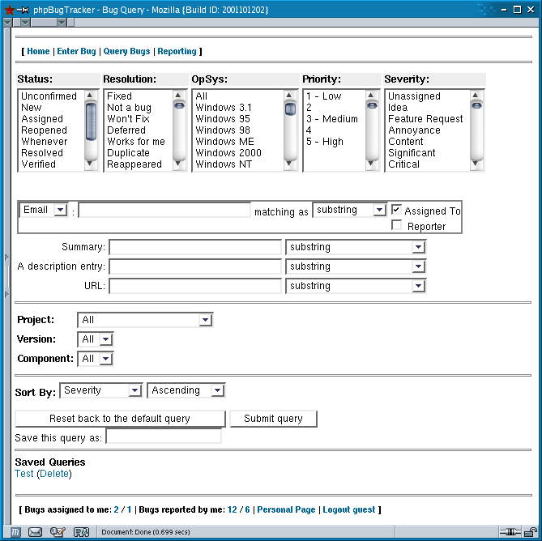

The query page presents a wide array of options for finding a specific set of bugs, and thus can be a little overwhelming at first sight. By submitting the default form, without selecting any options, a list of all the bugs in the database will be returned. Every option selected will filter out more bugs as you get more specific in your search.

Searching for bugs.
The five select boxes at the top allow you to choose bugs with specific characteristics, such as the priority, or those that have reached certain stages in the testing process, such as those that have been fixed. Multiple items can be chosen from each select box, and all options are combined for the filter. For example, if you selected New and Unconfirmedfrom the Status box and Feature Request from the Severity box, submitting the form would return a list of all the bugs that were designated feature requests and that haven't been handled yet.
The middle set of boxes allow you to get more detailed in your search, whether you want to search for bugs assigned to an individual or search for a certain snippet of text in a bug description. The three select boxes immediately following allow you to restrict your search to bugs filed against a certain project, or even against a specific version or component of a project. The last two select boxes determine how the bug list will be sorted.
A set of search parameters can be saved and given a name to make it easier to repeat a query in the future. Clicking on a named saved query will take you to the list of bugs that meet the search criteria, and deleting one will remove the link from the list.
Finally, at the bottom of every page you will notice four numbers that are linked. These will run a query of open and closed bugs assigned to you, and open and closed bugs reported by you respectively. These links allow you to quickly list which bugs are on your hit list, for example, and to see at a glance the status of bugs assigned to or reported by you.